Die Geschichte des SV Eutingen e.V.

Das originale Vereinslogo des SV Eutingen e.V. - Handgestickt als Vereinslogo für Trikots - Herstellungsjahr leider unbekannt
1921: Der Fußball hält Einzug in Eutingen, der Jahrgang 1901 spielt Straßenfußball am Alten Bahnhof und in der Unteren Gasse. Als „Urväter“ der Eutinger Fußballgeschichte hat im Jahr 1986 Heinrich Kreidler in seinen Erinnerungen aufgeschrieben: Ignaz Wehrstein, Anton Scherer (Uhrmacher) Albert Platz, Melchior Zimmermann, Gustav und Philipp Krauß, Anton Larcher (Torwart), Christian Scherer (später nach Mexiko ausgewandert).
1923: Als Schüler machte Heinrich Kreidler das erste Jugendspiel in Untertalheim. Er erinnerte sich besonders gut daran, „Weil wir nach dem Spiel fluchtartig Richtung Withau rennen mussten.“
29. Dezember 1927: Für einen Turnplatz für die Schule wurde durch die Gemeinde eine Wiese in „Weiherwiesen“ mit 8,33 Ar erworben.
3. Mai 1928: Zum Kinderfest des Radfahrervereins werden 20 Reichsmark Zuschuss aus der Gemeindekasse bewilligt.
1929/1930: Neben Fußball auf den Wiesen und in der Sandgrube war auch Kraftsport hoch im Kurs, Boxen, Ringen und Gewichtstemmen. Trainiert wurde unter Josef Krespach in der Gemeindebackstube (später Milchsammelstelle). Alois Gsell und Paul Raible engagierten sich in diesen Sportarten besonders.
19. Oktober 1930: Die Gemeinde verleiht an den „Gesellenverein“ Tribünenbretter.
13. Mai 1932: Anträge des katholischen Gesellenvereins und des Kraftsportvereins um Zuweisung eines Sportplatzes. Wegen Grundstücks- und Kostenproblemen lehnt der Gemeinderat ab.
24. Januar 1933: Von „Eutinger Sportvereinen“ wird bei der Gemeinde ein Sportplatz in der Sandgrube auf dem Eichenberg beantragt. (Dort sind heute die Tennisplätze)
14. Mai 1933: Der Gemeinderat berät über Anliegen des „Athletikvereins“ vertreten durch Paul Raible.
10. März 1934: Als Sportplatz wird die Farrenwiese an der Ergenzinger Straße den „Vereinen“ kostenlos zur Verfügung gestellt.
24. Oktober 1935: Es werden im Gemeinderat erneut Beratungen über einen ordentlichen Sportplatz abgehalten.
15. Juli 1936: Auf dem Sportplatz wird ein elektrischer Anschluss verlegt.
29. März 1947: Gründungsversammlung des SVE im Schwesternhaus. 32 aktive und 23 passive Mitglieder erklären ihren Beitritt. Anton Hörmann wurde zum 1. Vorsitzenden und Karl Schäffer zum Stellvertreter und Kassier gewählt. Spielführer der Ersten wurde Hans Kramer, für die Zweite Alfons Akermann und zum Ballwart wurde Wilhelm Marquardt bestimmt. Der Jahresbeitrag für Passive beträgt 50 und für Aktive 30 Reichspfennig. Das erste Pflichtspiel zur Pokalrunde wird „wegen Nichterscheinen des Schiedsrichters“ als Freundschaftsspiel ausgetragen, bei welchem Untertalheim mit 2:1 Toren gewinnt. In der Wiederholung dreht Eutingen den Spieß um und gewinnt mit demselben Ergebnis. Der SVE kommt ins Pokalendspiel, das in Horb gegen Bierlingen ausgetragen wird.
Im Protokoll ist festgehalten: „Das Spiel wird mit einer Härte ohnegleichen ausgetragen. Die Mannschaft kämpft wie die Löwen! Hervorgehoben zu werden verdient unser Torwart Martin Klink. Das Spiel wird beim Stand von 2:1 für Eutingen von Schiri Walz (Hochdorf) vier Minuten vor Schluss abgebrochen.“
Wie die „Entscheidung am grünen Tisch“ letztlich ausfiel, ist leider nicht notiert. Trotz der Freude am Sport wird daran erinnert, dass der Krieg noch gar nicht so lange aus ist. Im Spielbericht vom 1. Pokalspiel der Runde 47/48 gegen Mühlen (5:1 gewonnen) steht u. a.: „Der aus der Gefangenschaft zurückgekehrte Josef Teufel wirkt bei der ersten Mannschaft mit.“
Im Bericht über das 8. Verbandsspiel gegen Mühringen steht: „Das Spiel wird 2:5 verloren. Mühringen ist sehr hart. Der Mittelläufer Oskar Kramer wird schon in den ersten Minuten zusammengeschlagen!“ So rau waren damals die Sitten.
1947/1948: „Zum Jahreswechsel hielt der Verein im Gasthaus zum Lamm eine Silvesterfeier ab. Kameradschaftlich wurde das Neue Jahr begonnen.
4. Januar 1948: Im „Lammsaal“ tritt der Sportverein mit einer Theateraufführung an die Öffentlichkeit und hat dabei solchen Erfolg, dass das Spiel am Dreikönigstab mittags und abends wiederholt wird und das Lamm jedes Mal „brechend voll“ ist.
Mitwirkende waren: Bürgermeister Konstantin Gsell als Regisseur, Gustav Kläger als Regisseur und Spieler, Bernd Müller als Souffleur und als weitere Akteure: Vorstand Anton Hörmann, Julius Kläger, Hans Kläger, Bernd Teufel, Alois Teufel, Alfons Akermann, Wilhelm Marquardt, Anton Kramer, Rosa Kläger, Anne Akermann, Maria Beuter, Emilie Beuter, Zenta Kläger, Hildegard Wehrstein.
19. März 1948: In der Generalversammlung im „Dreikönig“ kann der junge Verein nach knapp einjährigem Bestehen ein stolzes Kassenplus von 2.200 Mark bilanzieren. Das weckt den Wunsch, sich nach einem passenden Trainer umzusehen, denn „dies wäre für den Verein von größtem Vorteil, um System und Technik, sowie eine gute Gesamtleistung zu erreichen“. Ab diesem Termin fungierte Alfons Krauß als Schriftführer, er wurde aus beruflichen Gründen am 1. September von Hubert Ziegler abgelöst.
29. August 1948: Ein „Sommerfest mit Blitzturnier“ ruft 17 Gastmannschaften der A- und B-Klasse nach Eutingen. „Am Abend fand im Gasthaus zum Dreikönig die Siegerehrung statt. Jeweils die ersten beiden Mannschaften in A- bzw. B-Klasse erhielten schöne, holzgeschnitzte Preise, während allen übrigen beteiligten Mannschaften Diplome überreicht wurden.“
Mit fröhlichem Tanze für Jung und Alt endete dieser herrliche Tag.
5. September 1948: Schon eine Woche später fuhren die Eutinger zum Sommersportfest nach Wittershausen. „Um ½ 9 Uhr wartete eine stattliche Anzahl Sportbegeisterter beim Café Odermatt auf den von Vollmaringen kommenden Omnibus. Mit Gesang und Harmonikaspiel ging’s dann ab …“ notierte der Chronist die Fußballfahrt.
3. Oktober 1948: Im ersten Pokalspiel konnte Eutingen den Lokalrivalen Ergenzingen mit einem 1:0 nach Hause schicken. (Das waren noch Zeiten!)
7. November 1948: Im zweiten Pokalspiel trat Eutingen gegen die Mannschaft aus Weitingen an. Nach zufrieden stellender Schiedsrichterleistung in der ersten Hälfte (Eutingen führte 4:0), ließen die Nerven des Neutralen offensichtlich nach. Im Protokoll steht darüber: „Die Zuschauer gingen lebhaft mit dem Spielgeschehen mit. Ohne größere Ursache stellte der Schiri zwei Weitinger Spieler vom Platz, worauf die gesamte Mannschaft geschlossen das Spielfeld verließ!“
26. Dezember 1948: Zum zweiten Mal nutzt der Sportverein die Winterpause zum Theaterspiel. „Der Dornenkranz einer Mutter“, ein Volksschauspiel in sechs! Akten mit siebzehn! Akteuren, geriet wieder zum überwältigenden Erfolg. Obwohl in den Nachbarorten ebenfalls Theateraufführungen stattfanden, war der Lammsaal jedes Mal voll. Drei Wiederholungen in den ersten Januartagen 1949 waren notwendig, um alle Theaterfans des SVE befriedigen zu können. Später, sehr viel später, hat dann die Tennisabteilung des SVE (der heutige Tennisclub) die Theatertradition des Sportvereins wieder aufgegriffen. Bis auf den heutigen Tag wird das Laienspiel mit alljährlicher Aufführung gepflegt.
19. März 1949: Ein Führungswechsel vollzog sich in der Generalversammlung: der seitherige Vorsitzende Anton Hörmann wurde zum Stellvertreter des neu gewählten 1. Vorsitzenden Bäckermeister Stefan Plaz bestimmt.
20. März 1949: Waren in der Vergangenheit insbesondere Torwartfehler ausdrücklich vermerkt, steht im Spielbericht über die Begegnung mit Bierlingen: „Hervorgehoben werden muss unser Torwart Engelbert Mayer, der wunderbare Paraden zeigte!“
1. April 1949: Kennzeichnend für die Zeit war u. a. , dass in der Ausschusssitzung in der „Germania“ die „Meldung an die (französische) Militärregierung über die Zusammenfassung der Finanzlage“ beraten wurde. Interessant auch der in jener Sitzung festgesetzte Tarif für den Vereinsdiener: für das Ansagen des Ausschusses erhielt er 40 D-Pfennig, für Ansagen des ganzen Vereins, sowie für das Beitragsinkasse je 2,50 DM.
Straffe Vereinsführung war Usus: Mitglieder mit einem halbjährigen Beitragsrückstand wurden aus dem Verein ausgeschlossen.
5. Mai 1948: Sieht man heutzutage die Fülle von Fußbällen, die ein Training oder Spiel zur Verfügung stehen, kann man sich kaum vorstellen, dass für den Kauf eines neuen Balles oder einer Fußballpumpe ein ausführlich beratener Ausschußbeschluß erforderlich war.
19. Juni 1949: Zum Vereinsausflug fuhr der SVE mit zwei Bussen an den Bodensee. In aller Herrgottsfrühe um 4 Uhr wurde am „Dreikönig“ gestartet. „Durch schlafende Ortschaften (noch dachte an eine Bodenseeautobahn kein Mensch)ging’s nach Beuron, wo es das erste Halt gab. Nach Genügen der Christenpflicht! Und probieren des guten Weins ging’s weiter Richtung Bodensee…“
20. September 1949: In einer Ausschusssitzung in der „Linde“ wurde die Herrichtung des Sportplatzes beschlossen. (Und viele solche Aktionen sollten im Laufe der nächsten fünfzig Jahre folgen)
10. Oktober 1949: „Anlässlich eines Fass Freibiers fand sich der Ausschuss und die 1. und 2. Mannschaft im Dreikönig zusammen.“ In dieser „Sitzung“ wurde die Aufstellung einer Jugendmannschaft beschlossen. Zum Jugendwart wurde Hans Kramer bestellt, ein Mann, der sich in vielen Funktionen zeitlebens dem SVE verschrieben hat.
16. Oktober 1949: Nach einer Reihe von Erfolgsmeldungen im Protokoll musste der SVE-Chronist auch solche Einträge wie über das 4. Verbandsspiel gegen Sigmarswangen machen: „Über das Spiel möchte ich wenig berichten, denn es war so deprimierend, dass mir die Worte fehlen. Ergebnis 7:1 !!!!“
23. Oktober 1949: Besser kann das Auf und Ab im Fußball gar nicht beschrieben werden, als im folgenden Spielbericht über die mit 3:1 gewonnene Begegnung gegen Wittershausen, den wir wörtlich zitieren: „Aus Ärger über das letzte Spiel wohnte ich diesem Spiel nicht bei und der Folge: Die Mannschaft war nicht wieder zu erkennen. Es klappte alles wie am Schnürchen. Hervorgehoben werden muss unser Torwart Engelbert Mayer und der Linksaußen Wilhelm Marquardt. Erst in der letzten Minute schoss Wittershausen den Ehrentreffer.“
26. Dezember 1949: Und wieder wird am Stephanstag Theater gespielt. Als Hauptstück „Wenn die Heimat ruft“ und das Luststück „Schärbele“. Wieder an drei Tagen erfolgreich aufgeführt.
12. März 1950: Ab der Generalversammlung fungiert Anton Hörmann als Schriftführer, berichtet über 20 Verbandsspiele, von denen 16 gewonnen und nur vier verloren wurden. Als bemerkenswert wurde notiert: „Unter großer Begeisterung gab dann Bürgermeister Johann Akermann bekannt, dass er ab sofort dem Verein beitreten werde.“
Dies bedeutet für den jungen Verein einen wichtigen Schritt zur gesellschaftlichen Akzeptanz im Dorf, schon vorher war immer mit Stolz vermerkt worden, dass bei den Theateraufführungen der Hochwürdige Herr Pfarrer und der Herr Bürgermeister anwesend waren.
17. Mai 1950: Der SVE wurde Meister in der A-Klasse! Große Freude herrschte darüber, obschon man innerhalb der Mannschaft ernsthaft darüber diskutierte, in der A-Klasse verbleiben zu wollen. Auf neutralem Platz in Dornstetten brachte ein 2:1 Sieg über Alpirsbach den Aufstieg in die Bezirksklasse.
Dort traf man auf Gegner, gegen die man auch heute noch anzutreten hat, wie Dornstetten, Lützenhardt, aber auch Altensteig, Nagold und Wildberg zählten zu den Mannschaften der Bezirksklasse. In der höheren Klasse war es weitaus schwieriger, Siege einzufahren. Schon im Jahr darauf folgte der Abstieg in die von der A- in die B-Klasse umbenannte Liga.
27. September 1952: Der SVE ist „E.V.“. Es erfolgt die Eintragung des Vereins in das Vereinsregister beim Amtsgericht Horb. Ein Passus aus der Satzung über den Vereinszweck: …sowie die Pflege froher, sittlicher Geselligkeit.“
3. März 1953: Stefan Plaz gibt sein Amt als Vorsitzender an seinen Stellvertreter Anton Hörmann ab. Dessen zusätzliche Position als Schriftführer übernimmt Hans Kramer.
Das Jahr 1953 bringt dem SVE einen weiteren Abstieg, zum Entsetzen der Aktiven und der Vereinsmitglieder sah man sich in der C-Klasse wieder. Dies mit beiden Mannschaften. Die Erste spielte im oberen, die Zweite im unteren Kreis. In der unteren Klasse wurde dann auch wieder gewonnen, Ergebnisse mit 7:0 und 9:0 Toren sind vermerkt.
21. Juli 1953: Die Festesfreude ward durch den Abstieg nicht gebrochen. Ein internes Sportfest aller Mannschaften von der Jugend bis zur AH wurde durchgeführt. Zusätzlich wurden Staffelläufe ausgetragen und Läufe über 100 und 1.000 Meter, sowie ein Radrennen. Abends war Preisverleihung mit Tanz im „Lamm“.
26. Dezember 1953: Nochmals mit großem Erfolg wurde im Lammsaal Theater gespielt und das gleich mit zwei Hauptstücken, zwei Wiederholungen gerieten ebenso erfolgreich.
22. Januar 1954: Der Ausschuss beschließt, bei der Gemeinde Antrag auf die Einrichtung eines Ausweichsportplatzes zu stellen. Dies im Hinblick auf die anstehende Kanalisation, welche den derzeitigen Platz tangiert. Zeitweise wurde der Spielbetrieb auf eine Wiese im „Brühl“ verlegt. Der richtige Ausweichplatz fand sich dann in der „Burghalde.“
13. März 1954: Erstmals wird die Frage der Sportplatzbeleuchtung angeschnitten, aber dann wieder zurückgestellt. Philipp Platz wurde zum Spartenleiter „Tischtennis“ bestellt.
18. April 1954: Mit dem in der Verlängerung gelungenen 4:3-Erfolg über Herzogs-weiler machte der SVE den Wiederaufstieg in die B-Klasse klar und wurde zum Ende des Jahres Herbstmeister, was mit einem Tanzabend im „Lamm“ gefeiert wurde.
11. Februar 1955: Mit der Tanzkapelle „Orion“ wurde erstmals eine „Faschingsfeier“ im Lamm veranstaltet. Geboten wurden „zwei lustige Einakter, Duette, Terzette und Soloszenen.“
6. Juni 1955: Die erste Mannschaft ist Meister der B-Klasse. Die für den Namen „Pappelstadion“ verantwortlichen Pappeln wurden gepflanzt.
19. Juni 1955: Pokalturnier und Sportplatzeinweihung mit Gefallenenehrung, Kirchgang, Festzug und kirchlicher Weihe des Platzes. Der Festball am Samstagabend fand parallel auf dem Festplatz und im Lammsaal statt. Neben den sportlichen Aktivitäten erwies sich das Fest auch finanziell als erfolgreich, so dass der Kauf einer „Beleuchtungsanlage“ und die Anstellung eines Trainers beschlossen und im September installiert wurde.
3. Juli 1955: Der SVE steigt in die A-Klasse auf. (Der Eintrittspreis zu den Spielen betrug 70 Pfennig)
12. Januar 1956: Per Einschreiben erfolgt die erste Trainerentlassung (allerdings aus wirtschaftlichen Gründen).
19. Februar 1956: „Das angesetzte Spiel Eutingen-Altensteig fiel wegen der Kälte aus. Der ganze Monat Februar war sehr kalt. Bis zu 27 Grad Kälte!
25. März 1956: Der SVE zitterte um den Klassenerhalt, sicherte sich diesen mit einem 10:1-Sieg über Glatten. Gefeiert wurde das Ereignis in der „Sonne“, „jeder Spieler erhielt 1 Vesper und 1 Flasche Bier„
21. April 1956: Es wird eine „Notkasse“ eingerichtet, mit den freiwilligen Spenden sollten verletzte Spieler unterstützt werden.
18. Mai 1956: Die SVE-Jugend verpasst im Entscheidungsspiel gegen Bergfelden knapp die Meisterschaft, erhielt jedoch vom WFV die Fairness Urkunde verliehen.
10. Juni 1956: Spielfrei wegen „Heuet“ (Heuernte).
1. Juli 1956: Die zweite Mannschaft bringt vom Spiel in Gültstein eine 16:1-Packung mit heim.
5. August 1956: Nach zwei gewonnenen Vorspielen gegen die französischen Garnisonen in Horb und in Reutlingen, gewann der SVE das entscheidende Spiel in Horb klar mit 6:2 und erhielt den vom Captain gestifteten „schönen Pokal“.
28. April 1957: Beim 3:1 verlorenen Spiel in Alpirsbach wurde „der I. Mannschaft zirka DM 120 aus den Brieftaschen genommen. Die Polizei wurde sofort verständigt.“ Der Verein unterstützte mit späterem Beschluss durch Erstattung von 60 Prozent der gestohlenen Summen.
16. März 1958: In einer außerordentlichen Generalversammlung wechselte die Vorstandschaft. Otto Schach wurde nach Anton Hörmann zum Vorsitzenden gewählt, zu seinem Stellvertreter Eberhard Jäger und Anton Kramer zum Schriftführer bestellt. Für dieses Amt wurde eine Schreibmaschine angeschafft.
1. Juni 1958: Sportfest mit Pokalturnier auf dem Eutinger Sportgelände. Stark die Beteiligung beim Fest durch die Schule, die Schüler führten einen Dreikampf im Weitsprung, Ballweitwurf und 50-m-Lauf durch. Rose Saur wurde Gesamtsieger. Die Leitung der Schülerwettbewerbe oblag Oberlehrer Wolfram Bihlmaier und der Lehrerlegende Lena Straub.
Eine Art Vorläufer des heutigen Gäupokals war das Pokalturnier mit den B-Klassen. Mannschaften aus Bondorf, Unterjettingen, Öschelbronn, Vollmaringen und Weitingen. Pokalsieger wurde der SV Unterjettingen.
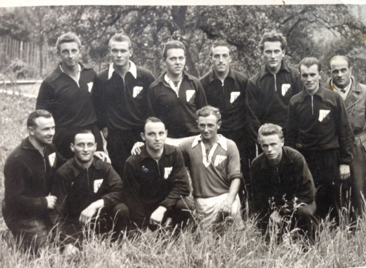
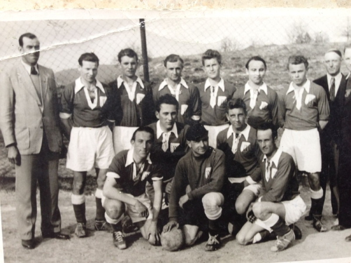
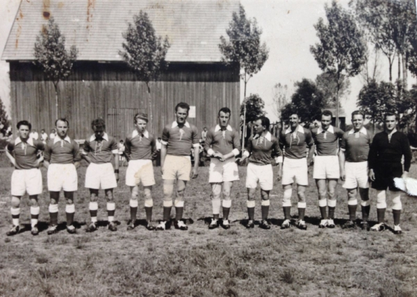
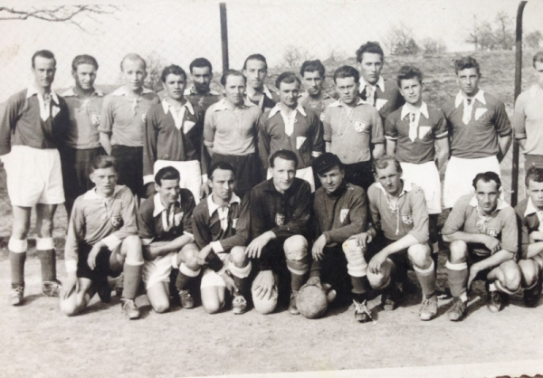
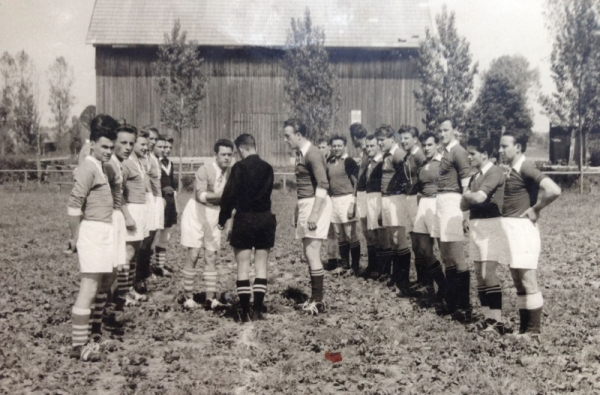
14. Juni 1958: Bei der Nachfeier zum Fest gab es für alle Helfer „2 rote Würste, dazu wurde ein Fass Freibier, gestiftet von der Gambrinus-Brauerei in Nagold, getrunken.“
5. Juli 1958: Für „minderbemittelte“ Jugendliche wurde ein Zuschuss zur Beschaffung von Kickstiefeln beschlossen.
24. August 1958: Mangels „Masse“ musste die Jungendmannschaft abgemeldet werden. Auch für die „Zweite“ tauchte immer wieder Personalnotstand auf.
31. Januar 1959: Bei der Fasnetsfeier im Lammsaal ist erstmals die Tanzkapelle August Creuzberger und Georg Berndt erwähnt.
28. Februar 1959: „Die Bekanntgabe der Generalversammlung wurde durch die Tageszeitung, sowie durch Ausschellen durch den Gemeindediener durchgeführt.“
31. Mai 1959: Wieder einmal gab es eine Entscheidungsschlacht. Den fast sicheren Abstieg vor Augen schlug der SVE in einem Stichkampf Alpirsbach ganz klar mit 4:0, gerettet!
1966: Die Abteilung Damen-Gymnastik wird gegründet.
19. Juni 1966: „Zwanzigjähriges“ mit einem Freundschafts-Pokalturnier und großem Festprogramm, u. a. mit den Melodie-Stars.
Frühjahr 1967: Nach Überwindung etlicher Hürden beginnt der SVE mit dem Bau des Sportheims. Bis dahin stand nur eine „Hütte“ als Umkleideraum zur Verfügung. Einer Zusammenfassung des früheren Vorstandes Anton Hörmann verdanken wir eine Baugeschichte. Das Grundstück zwischen dem Sportplatz und der Straße nach Mühlen wurde von Franz Brobeil erworben. Über die Finanzierung schrieb Hörmann: „Der nächste Punkt war die Bezahlung des Bauplatzes. Ein Darlehen musste aufgenommen werden. Drei Mitglieder des SVE bürgten mit Ihrer Unterschrift für das Darlehen. Das gelungene Sportfest vom Jahre 1966 und eine großherzige Spende des Kegelklub „Oms Härle“ und die finanzielle Seite des Bauplatzkaufes war erledigt!“
Sowohl die Finanzierung des Bauprojektes u. a. durch Spenden und eine Haussammlung als auch die beispielhaften Eigenleistungen der SVE-Handwerker beschrieb der Chronist als „eine Leistung, die Seinesgleichen sucht.“
22. Juni 1968: Schon vor der eigentlichen Einweihung wird die erste Jahreshauptversammlung im Sportheim abgehalten.
9. Juni 1969: Mit Fest und Pokalturnier wird der Sportheimneubau einschließlich Kegelbahn eingeweiht. Insgesamt wurden rund 15.000 Stunden Arbeitseinsatz geleistet! Eutingen verfügt als einer der ersten Sportvereine im Altkreis Horb über ein eigenes Haus. Neben dem geselligen Aspekt ist für die Spieler die Duschanlage eine willkommene Neuerung.
28. Februar 1972: In der Generalversammlung kann Kassier Hans Kramer bekannt geben, dass der durch den Sportheimbau aufgetürmte Schuldenberg nunmehr fast gänzlich abgetragen ist. Man vernahm es mit Erleichterung.
11. Juni 1972: 25-jähriges Jubiläum mit großem Sportfest.
21. Januar 1973: Erstmals wird ein Wanderpokalturnier zwischen Eutingen, Göttelfingen und Rohrdorf beschlossen.
5. April 1975: Die Tennisabteilung wurde gegründet, erster Abteilungsleiter war Helmut Krespach. Bereits drei Monate später waren zwei Plätze gebaut, der Spielbetrieb konnte beginnen. Im Jahr 1979 erfolgte der Bau des Clubheims.
15. Juni 1975: Namhafte Teams sind beim A-Jugendturnier zu Gast in Eutingen: TV Gültstein, VfR Sulz, VfL Nagold, VfL Herrenberg, SV Mötzingen, SV Bieringen, TSV Dettenhausen und mit dem Verbandsligisten SV 03 Tübingen auch der Turniersieger.
1976: Es wurde mit dem Bau des neuen Sportplatzes „jenseits des Hochgrabens“ begonnen. Hier erbrachten die „Freiwilligen“ insgesamt 6.500 Arbeitsstunden.
14. Juli 1979: Verbunden mit einem Pokalturnier feiert der SVE sein 30-jähriges Bestehen.
Herbst 1981: Der Damenfußball fasst in Eutingen Fuß und nimmt einen ungeahnten Aufschwung, Kreisliga, Bezirksliga, Landesliga waren und sind die Stationen.
1982: Für die kleinen Sportbegeisterten wird die Abteilung Kinderturnen dem SVE angegliedert.
1984: Mit der Hereinnahme der Volleyballabteilung erweitert der SVE die Sportpalette.
21. März 1987: Ein herber Schlag trifft den Verein. Albrecht Schmollinger, zwölf Jahre engagierter Vorsitzender, bricht kurz nach Eröffnung der Jahreshauptversammlung zusammen, keine Hilfe ist mehr möglich. Der SVE verliert seinen Chef. Herbert Kittel wird in einer zweiten Versammlung zu Schmollingers Nachfolger gewählt.
28. Juni 1987: Mit einem großen Fest begeht der SVE sein vierzigjähriges Jubiläum mit dem damaligen Vorsitzenden Herbert Kittel. Ehrengast beim Festbankett war der CDU-Bundestagsabgeordnete Hans Joachim Fuchtel, der auf dem Eutinger Sportgelände seine ersten Fußballsporen als Verteidiger verdient hatte. Gleichzeitig wird der „alte“ Platz nach umfangreichen Sanierungsarbeiten und Höherlegung wieder in Betrieb genommen.
15. Juni 1991: Das Sportheim wird grundlegend saniert, vor allem die Sanitär- und Gastronomiebereiche, von den fast 200.000 Mark Gesamtkosten wird wiederum ein Viertel durch Eigenleistung eingespart.
15. Juni 1997: Den größten Erfolg in der jüngsten SVE-Geschichte ist die Meisterschaft in der A-Klasse und der damit verbundene Aufstieg in die Bezirksklasse. Das die Zweite ebenfalls den Meister machte, war Pflicht. Der Jubel war riesig.
14. Juni 1998: Mit Hängen und Würgen wurde auf den letzten Drücker der Klassenerhalt geschafft. Die Reserve verlor den Meistertitel wegen zwei Toren Unterschied an den FC Göttelfingen.
20. Juni 1998: Die B-Mädchen des SVE sind Meister und steigen somit in die Leistungsstaffel auf.
7. Juni 2009: Der SVE hat die Rückkehr in die Kreisliga A unter Trainer Bujar Shala geschafft.
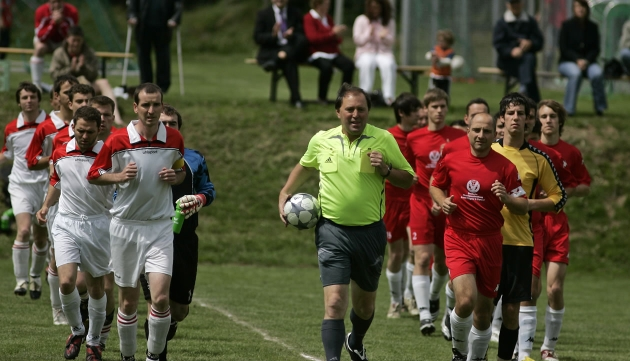
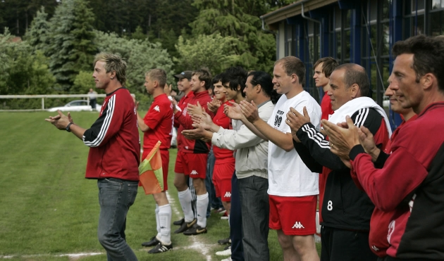
29. Mai 2011: Der SVE ist zurück in der Bezirksliga !!!
Bereits am vorletzten Spieltag machen die Herren des SVE mit Trainer Mehmet Özkoyuncu die Meisterschaft und den damit verbundenen Aufstieg in die Bezirksliga perfekt. Das Spiel gegen die SF Salzstetten 2 wurde mit 6:0 gewonnen. Torschützen: 2 x Mehmet Özkoyuncu, 2 x Nico la Russa, Keven Schmollinger und Erdin Bas.
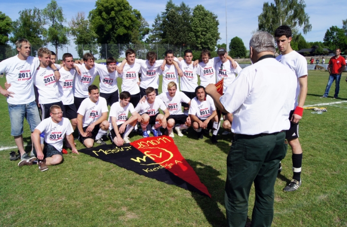
Presse:
Zeitungsbericht - Das Bier fließt in Strömen
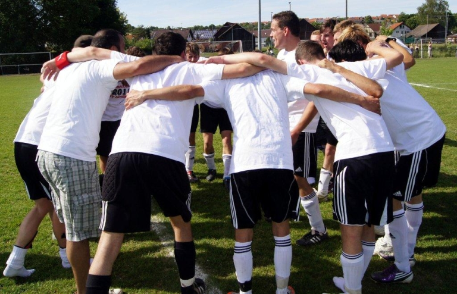
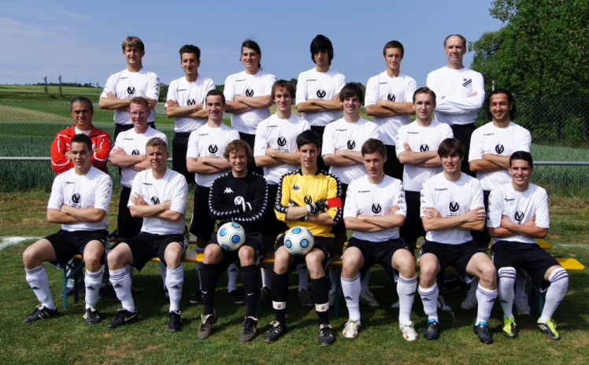
17. Mai 2016: Das Projekt Kunstrasen mit Sportheimneubau beginnt
Das größte Projekt in der Vereinsgeschichte des SVE beginnt, nach mehrjähriger Planung, mit dem Spatenstich.
Das Projekt ist ein Projekt für die kommenden Generationen.
Zeitungsartikel zum Spatenstich - pdf
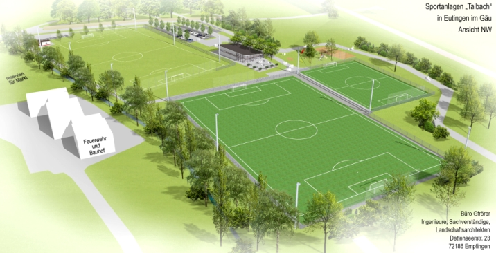
Weitere Infos zum Projekt Kunstrasen, Bilder, Videos...
Homepage des Projekt - www.projekt-kunstrasen.de
Facebook Info Seite
5. Juni 2016: Die Frauen des SV Eutingen schaffen den grandiosen Aufstieg in die Verbandsliga !!!
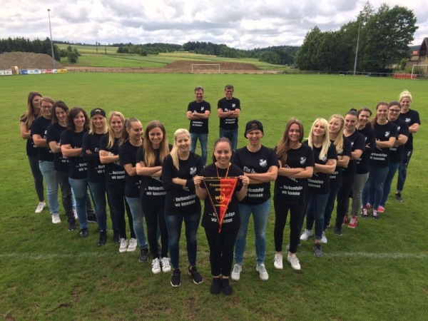
Spielbericht des letzten Spieltags:
SVE Frauen I - TSV Lustnau 1:0
Zu Beginn des Spiels machte der TSV viel Druck, wirkliche Torchancen erspielten sie sich aber nicht. Langsam fand Eutingen in sein gewohntes Spiel und fing an den Gegner auch schon früher zu stören. Mit einem 0:0 ging es in die Pause. Die Trainer pushten ihre Mädels nochmal so richtig und glaubten an sie. In der 61. Minute erspielten sich die Damen einen Eckstoß. Trainer Norbert Nesch sagte: "Passt auf Mädels jetzt kommt ein Tor".
Nesch weiß einfach wann er sich auf seine Mädels verlassen kann. Kim Ruoff köpfte nach einem Ball von Annika Beck ein. Die Ersatzbank und auch die Trainer stürmten auf das Feld, die Freude war riesig. Danach machte Lustnau nochmal Druck, doch die Abwehr stand an diesem Tag perfekt. Als der Schiri endlich Abpfiff hatten die Mädels Vereinsgeschichte geschrieben und steigen erstmals in die Verbandsliga auf.
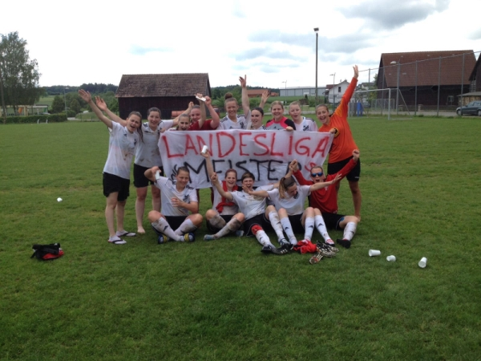
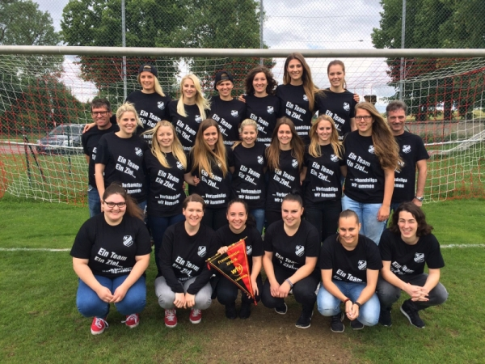
19. Juni 2016: Die 1. Mannschaft steigt nach einer nur mäßigen Saison in die Kreisliga A ab. Zwar hatte man noch eine Chance im Relegationsspiel, doch dieses wurde vor 800 Zuschauern in Holzhausen (auf neutralem Boden) gegen Hallwangen mit 0:1 verloren. Trainier Ümit Dagistan, der die Mannschaft neun Spieltage vor Saisonende übernahm, bleibt auch in der Saison 2016 / 2017 Trainer der SVE - Jungs.
31. Juli 2016: Die 1. Mannschaft gewinnt das Ortsteilpokalturnier der Gemeinde Eutingen auf heimischem Platz.
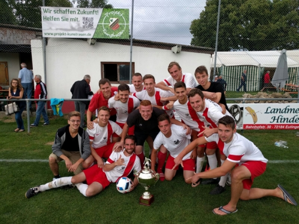